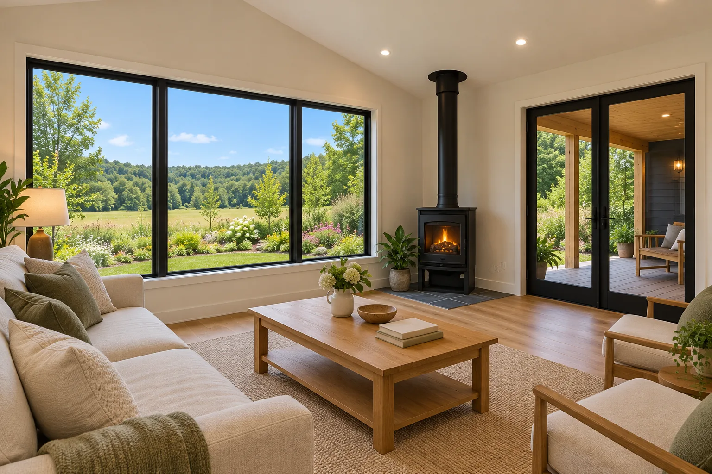

Walk the land
We look at access, slope, drainage, soils, trees and the best place for the house, the barn and the driveway.
Site checklist
A rural lot needs a hard look before anyone draws a floor plan. These are the things we check first.

We look at access, slope, drainage, soils, trees and the best place for the house, the barn and the driveway.
Most rural lots need a soil test for the septic system, and either a well or a water line. We find out early, because it can decide where the house goes.
We plan how power reaches the house and how trucks reach the site, including the drive, culverts and a turnaround.
With the site worked out, we plan the house and outbuildings around how you’ll use the land.
Common questions
Yes. A walk of the property before you buy can tell you a lot about site costs, septic and access.
The county approves septic systems based on a soil evaluation. We coordinate the soil work and the system design with you.
Yes. We build outbuildings on their own or as part of a new home.
It varies a lot. A long driveway, a well or a long power run can add real cost. We’ll give you a realistic range after we walk the property.
We write up a change order with the cost and any effect on the schedule, and nothing changes until you sign it.